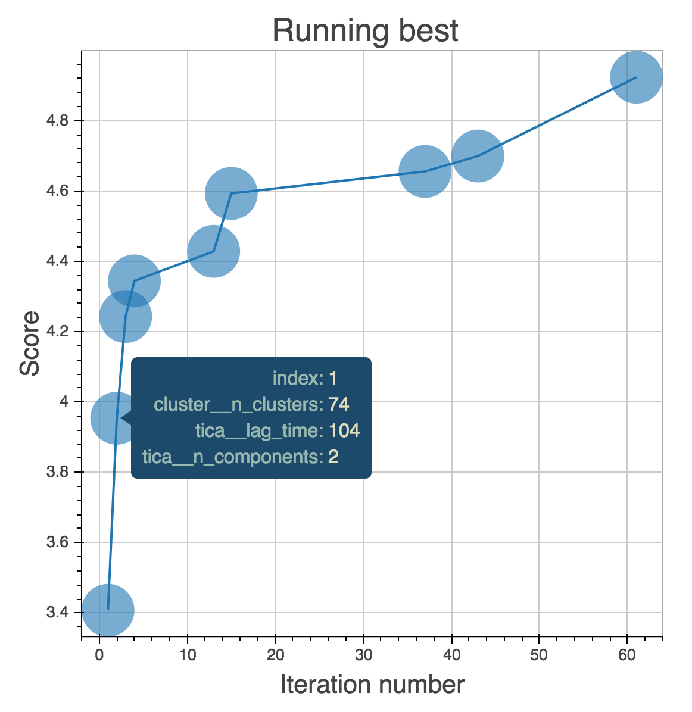
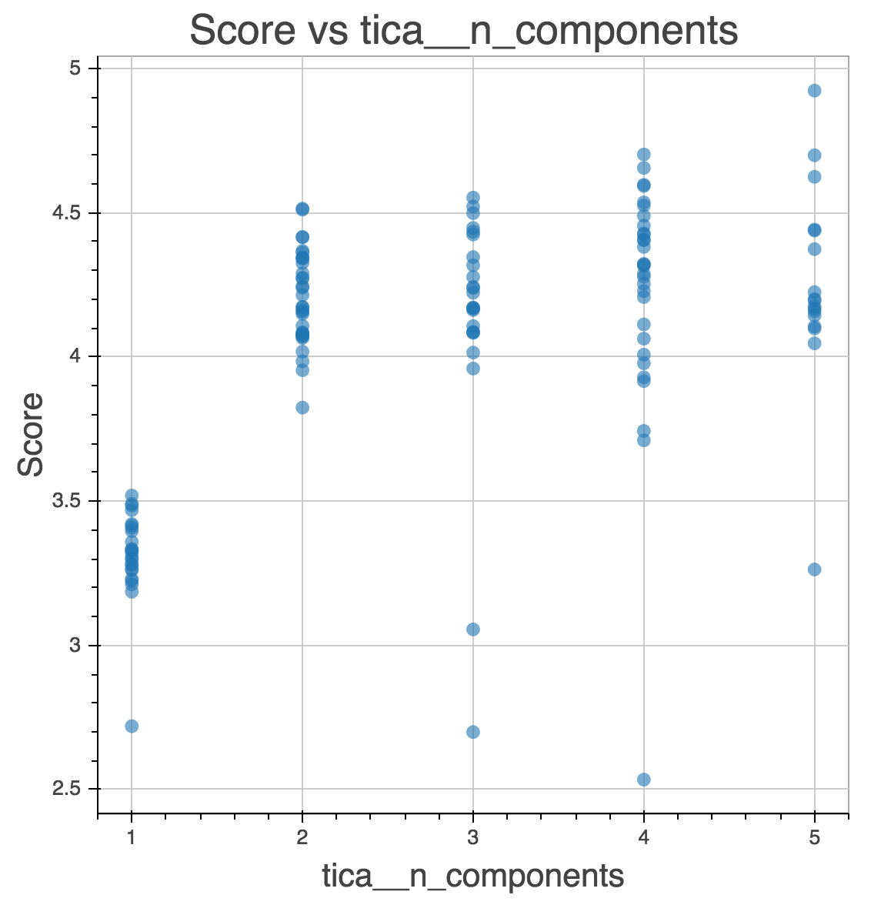

- Analysis happens in walled gardens (Gromacs, Amber, VMD)
- Exclusively command line interfaces, C and Fortran code
- Duplication of statistical algorithms by non-experts (e.g. chemists, biologists)
- Possible code maintainability issues?
Carlos X. Hernández, Matthew P. Harrigan, Muneeb M. Sultan, Brooke E. Husic
Updated: Jun. 23, 2016 (msmbuilder v3.5)
Old-School Analysis of MD Data
Jarvis Patrick Clustering in Gromacs
real code in gromacs
static void jarvis_patrick(int n1, real **mat, int M, int P,
real rmsdcut, t_clusters *clust) {
t_dist *row;
t_clustid *c;
int **nnb;
int i, j, k, cid, diff, max;
gmx_bool bChange;
real **mcpy = NULL;
if (rmsdcut < 0) {
rmsdcut = 10000;
}
/* First we sort the entries in the RMSD matrix row by row.
* This gives us the nearest neighbor list.
*/
Jarvis Patrick Clustering in Gromacs (Cont.)
// Five more pages of this // You get the idea // Also, how do we even use this function? static void jarvis_patrick(int n1, real **mat, int M, int P, real rmsdcut, t_clusters *clust);
Enter Data Science
- Machine learning is mainstream now!
- Thousands of experts are using machine learning approaches
- Well-tested, performant, and facile implementations are available
- Writing your own is not the way to go!
- E.g: Is clustering that special and MD-specific such that we need our own custom algorithms and implementations?
MSMBuilder3: Design

Builds on scikit-learn idioms:
- Everything is a
Model. - Models are
fit()on data. - Models learn
attributes_. Pipeline()concatenate models.- Use best-practices (cross-validation)
Everything is a Model()!
>>> import msmbuilder.cluster >>> clusterer = msmbuilder.cluster.KMeans(n_clusters=4) >>> import msmbuilder.decomposition >>> tica = msmbuilder.decomposition.tICA(n_components=3) >>> import msmbuilder.msm >>> msm = msmbuilder.msm.MarkovStateModel()
Hyperparameters go in the constructor.
Models fit() data!
>>> import msmbuilder.cluster
>>> trajectories = [np.random.normal(size=(100, 3))]
>>> clusterer = msmbuilder.cluster.KMeans(n_clusters=4, n_init=10)
>>> clusterer.fit(trajectories)
>>> clusterer.cluster_centers_
array([[-0.22340896, 1.0745301 , -0.40222902],
[-0.25410827, -0.11611431, 0.95394687],
[ 1.34302485, 0.14004818, 0.01130485],
[-0.59773874, -0.82508303, -0.95703567]])
Estimated parameters always have trailing underscores!
fit() acts on lists of sequences
>>> import msmbuilder.msm
>>> trajectories = [np.array([0, 0, 0, 1, 1, 1, 0, 0])]
>>> msm = msmbuilder.msm.MarkovStateModel()
>>> msm.fit(trajectories)
>>> msm.transmat_
array([[ 0.75 , 0.25 ],
[ 0.33333333, 0.66666667]])
This is different from sklearn, which uses 2D arrays.
Models transform() data!
>>> import msmbuilder.cluster
>>> trajectories = [np.random.normal(size=(100, 3))]
>>> clusterer = msmbuilder.cluster.KMeans(n_clusters=4, n_init=10)
>>> clusterer.fit(trajectories)
>>> Y = clusterer.transform(trajectories)
[array([5, 6, 6, 0, 5, 5, 1, 6, 1, 7, 5, 7, 4, 2, 2, 2, 5, 3, 0, 0, 1, 3, 0,
5, 5, 0, 4, 0, 0, 3, 4, 7, 3, 5, 5, 5, 6, 1, 1, 0, 0, 7, 4, 4, 2, 6,
1, 4, 2, 0, 2, 4, 4, 5, 2, 6, 3, 2, 0, 6, 3, 0, 7, 7, 7, 0, 0, 0, 3,
3, 2, 7, 6, 7, 2, 5, 1, 0, 3, 6, 3, 2, 0, 5, 0, 3, 4, 2, 5, 4, 1, 5,
5, 4, 3, 3, 7, 2, 1, 4], dtype=int32)]
Moving the data-items from one "space" / representation into another.
Pipeline() concatenates models!
>>> import msmbuilder.cluster, msmbuilder.msm
>>> from sklearn.pipeline import Pipeline
>>> trajectories = [np.random.normal(size=(100, 3))]
>>> clusterer = msmbuilder.cluster.KMeans(n_clusters=2, n_init=10)
>>> msm = msmbuilder.msm.MarkovStateModel()
>>> pipeline = Pipeline([("clusterer", clusterer), ("msm", msm)])
>>> pipeline.fit(trajectories)
>>> msm.transmat_
array([[ 0.53703704, 0.46296296],
[ 0.53333333, 0.46666667]])
Data "flows" through transformations in the pipeline.
Loading Trajectories
You can use MDTraj to load your trajectory files
>>> import glob
>>> import mdtraj as md
>>> filenames = glob.glob("./Trajectories/ala_*.h5")
>>> trajectories = [md.load(filename) for filename in filenames]
Featurization
Featurizers wrap MDTraj functions via the transform() function

>>> from msmbuilder.featurizer import DihedralFeaturizer >>> from matplotlib.pyplot import hexbin, plot >>> featurizer = DihedralFeaturizer( ... ["phi", "psi"], sincos=False) >>> X = featurizer.transform(trajectories) >>> phi, psi = np.rad2deg(np.concatenate(X).T) >>> hexbin(phi, psi)
Featurization (Cont.)
You can even combine featurizers with FeatureSelector
>>> from msmbuilder.featurizer import DihedralFeaturizer, ContactFeaturizer
>>> from msmbuilder.feature_selection import FeatureSelector
>>> dihedrals = DihedralFeaturizer(
... ["phi", "psi"], sincos=True)
>>> contacts = ContactFeaturizer(scheme='ca')
>>> featurizer = FeatureSelector([('dihedrals', dihedrals),
... ('contacts', contacts)])
>>> X = featurizer.transform(trajectories)
Preprocessing
Preprocessors normalize/whiten your data
>>> from msmbuilder.preprocessing import RobustScaler >>> scaler = RobustScaler() >>> Y = scaler.transform(X)
This is essential when combining different featurizers!
Also check out MinMaxScaler and StandardScaler
Decomposition
Reduce the dimensionality of your data

of freedom in time-series data
>>> from msmbuilder.decomposition import tICA >>> tica = tICA(n_components=2, lagtime=5) >>> Y = tica.fit_transform(X)
Also check out PCA and SparseTICA
Markov State Models
We offer two main flavors of MSM:
MarkovStateModel- Fits a first-order Markov model to a discrete-time integer labeled timeseries.ContinuousTimeMSM- Estimates a continuous rate matrix from discrete-time integer labeled timeseries.
Each has a Bayesian version, which estimates the error associated with the model.
Hidden Markov Models

We also offer two types of HMMs:
GaussianHMM- Reversible Gaussian Hidden Markov Model L1-Fusion RegularizationVonMisesHMM- Hidden Markov Model with von Mises Emissions
HMMs are great for macrostate modeling!
Cross-Validation
from sklearn.cross_validation import ShuffleSplit
cv = ShuffleSplit(len(trajectories), n_iter=5, test_size=0.5)
for fold, (train_index, test_index) in enumerate(cv):
train_data = [trajectories[i] for i in train_index]
test_data = [trajectories[i] for i in test_index]
model.fit(train_data)
model.score(test_data)
Also check out scikit-learn's KFold, GridSearchCV and RandomizedSearchCV.
Command-line Tools
We also offer an easy-to-use CLI for the API-averse
$ msmb DihedralFeaturizer --top my_protein.pdb --trjs "*.xtc" \
--transformed diheds --out featurizer.pkl
$ msmb tICA -i diheds/ --out tica_model.pkl \
--transformed tica_trajs.h5 --n_components 4
$ msmb MiniBatchKMeans -i tica_trajs.h5 \
--transformed labeled_trajs.h5 --n_clusters 100
$ msmb MarkovStateModel -i labeled_trajs.h5 \
--out msm.pkl --lag_time 1
Related Projects
We also maintain:
Osprey
Fully-automated, large-scale hyperparameter optimization

Osprey: Estimator
Define your model
estimator:
# The model/estimator to be fit.
eval_scope: msmbuilder
eval: |
Pipeline([
('featurizer', DihedralFeaturizer(types=['phi', 'psi'])),
('scaler', RobustScaler()),
('tica', tICA(n_components=2)),
('cluster', MiniBatchKMeans()),
('msm', MarkovStateModel(n_timescales=5, verbose=False)),
])
Osprey: Search Strategy
Choose how to search over your hyperparameter space
strategy:
name: gp # or random, grid, hyperopt_tpe
params:
seeds: 50
Osprey: Search Space
Select which hyperparameters to optimize
search_space:
featurizer__types:
choices:
- ['phi', 'psi']
- ['phi', 'psi', 'chi1']
type: enum
cluster__n_clusters:
min: 2
max: 1000
type: int
warp: log # search over log-space
Osprey: Cross-Validation
Pick your favorite cross-validator
cv:
name: shufflesplit # Or kfold, loo, stratifiedshufflesplit, stratifiedkfold, fixed
params:
n_iter: 5
test_size: 0.5
Osprey: Dataset Loader
Load your data, no matter what file type
dataset_loader:
# specification of the dataset on which to train the models.
name: mdtraj # Or msmbuilder, numpy, filename, joblib, sklearn_dataset, hdf5
params:
trajectories: ./fs_peptide/trajectory-*.xtc
topology: ./fs_peptide/fs-peptide.pdb
stride: 100
Osprey: Trials
Save to a single SQL-like database, run on as many clusters as you'd like*
trials: # path to a database in which the results of each hyperparameter fit # are stored any SQL database is supported, but we recommend using # SQLLite, which is simple and stores the results in a file on disk. uri: sqlite:///osprey-trials.db
Osprey: Running a Job
Simple command-line interface, easy to run on any cluster
$ osprey worker -n 100 config.yaml
...
----------------------------------------------------------------------
Beginning iteration 10 / 100
----------------------------------------------------------------------
Loading trials database: sqlite:///trials.db...
History contains: 9 trials
Choosing next hyperparameters with gp...
{'tica__n_components': 2, 'tica__lag_time': 180, 'cluster__n_clusters': 36}
(gp took 0.000 s)
...
Success! Model score = 4.214510
(best score so far = 4.593165)
Osprey: Real-Time Analytics
Osprey also makes it easy to create interactive dashboards
$ osprey plot config.yaml

